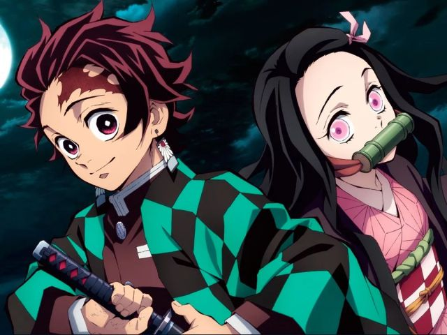
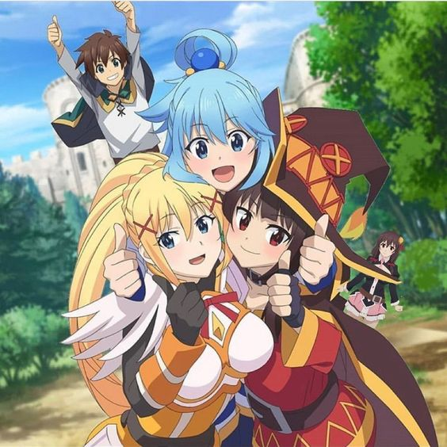

Anime
Anime
28/Enero/2022
Contexto
Al rededor del año 1900, durante la Primera Guerra Mundial, el anime se le conoce así por tener un estilo de dibujo difernte a la de otras de varias secuencias en dibujos que ya para los años 60 se le conocia como animeeshon, el cual se abrevia la palabra anime, y está compuesta con diversos géneros de animación japonesa para todas las edades.

Desarrollo
Es un medio de entretenimiento de comercio y cultura, ya que al rededor del mundo, se volvió muy popular en el resto del mundo y en el arte animado y cinematográficos, estos dibujos son para todas las edades, niños, adolescentes y adultos y también con la existencia del manga, cómics estilos orientales y posee de géneros como aventura, acción, romance, cuentos infantiles, fantasía, comedia y entre otros géneros más.
Motivación
Me ha gustado el anime porque solamente he visto como la cultura japonesa es tan extensiva en todo el mundo.
.png) Páginas principales
Páginas principales